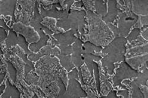

Study of the Museum's clock collections shows that over time, clockmakers increasingly made use of better quality material, notably steel. Steel is iron which contains carbon, which makes it much stronger than wrought iron. A steel with a 'high' carbon content contains about one percent carbon.
This micrograph, taken in the scanning electron microscope, shows the microstructure of a typical steel. The carbon occurs in the bright areas; these are grains of iron carbide. The more of these bright areas present, the higher the carbon content of the steel.